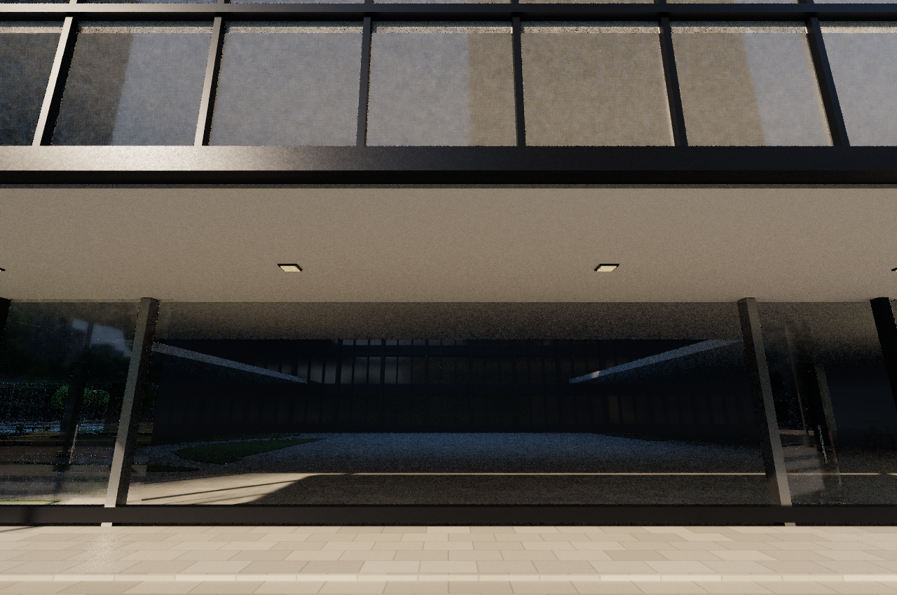
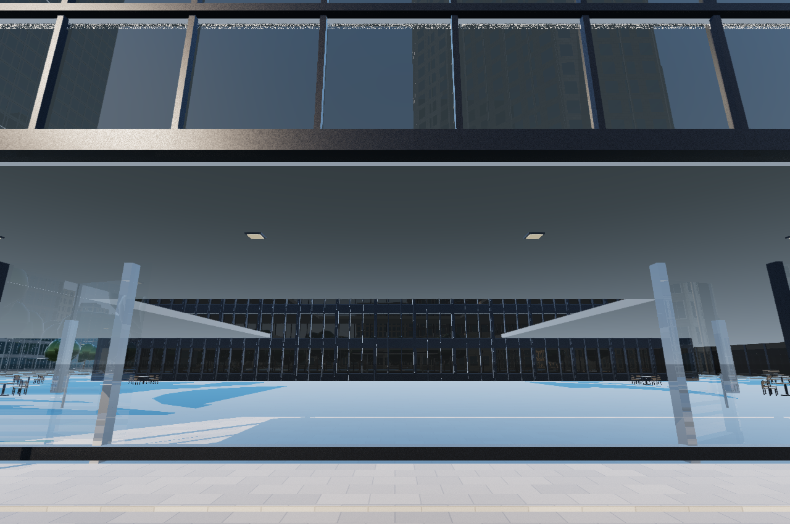
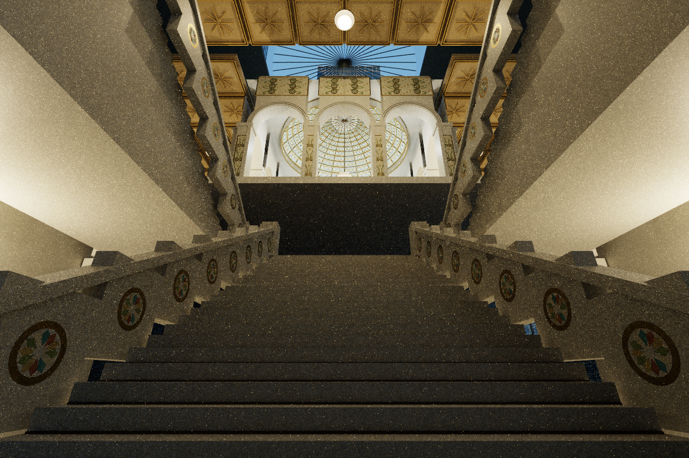
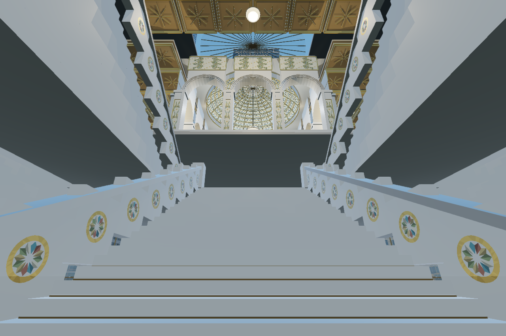
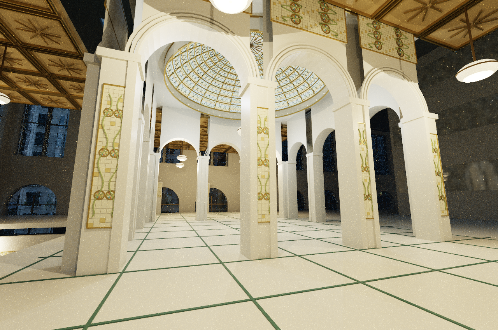
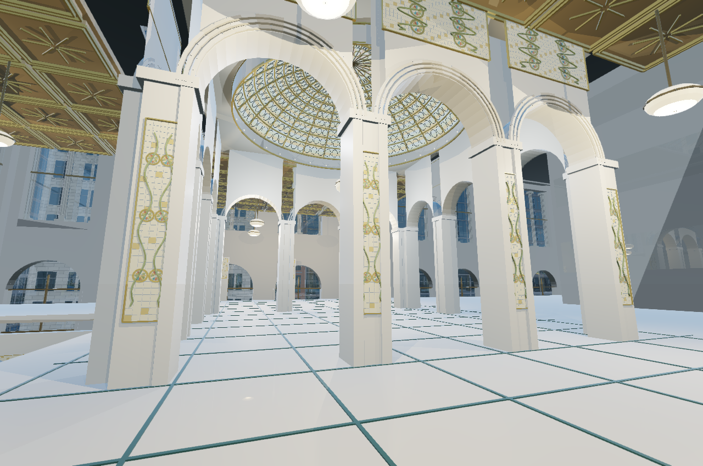
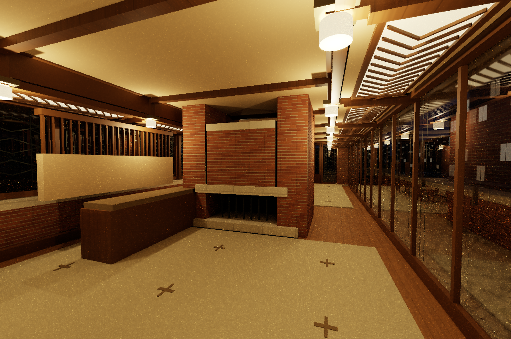
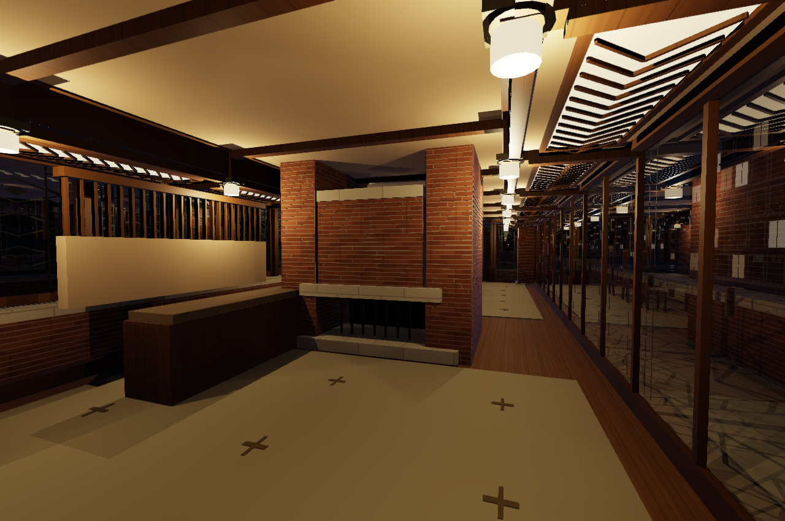

ATELIER / 2.4 / APPLE M3 ULTRA
Use the renderer menu at the upper right to choose Direct Ray Tracing, the original Path Tracing, or Fast Raster. R switches between Fast Raster and the last ray tracer you selected. The same camera, focus, lighting and playback remain in place.
Direct Ray Tracing uses deterministic visibility, reflection and shadow rays. It removes Monte Carlo sampling grain and uses spatial edge antialiasing without lighting history. Its ambient light, rough reflections and weaker local-light shadows are approximations; it does not reproduce soft shadows or multi-bounce indirect illumination. Moving fine geometry can still alias. Path Tracing preserves the richer light transport and can remain noisy in these interiors.
Navigation: G or Control–Command–F toggles full screen. In Map mode, W/A/S/D pan north/west/south/east; Shift triples panning speed. The camera stays vertical.
One complete shared Chicago scene, 46.1 million triangles including moving traffic. All modes use the same 1280 × 850 camera sequence, with two warmup frames and twelve measured frames per case. Path Tracing uses four samples per frame and three bounces. Direct renders once per frame. Times are median GPU command-buffer duration with the native app closed, not native window FPS. The ratio compares different lighting algorithms, not equal-quality images.
| Scene | Path | Direct | Raster | Path / Direct |
|---|---|---|---|---|
| robie exterior day | 81.7 ms | 10.4 ms | 9.1 ms | 7.9× |
| robie exterior night | 88.7 ms | 10.5 ms | 6.5 ms | 8.4× |
| robie living room day | 296.1 ms | 17.9 ms | 8.7 ms | 16.6× |
| robie living room night | 294.4 ms | 18.2 ms | 9.2 ms | 16.2× |
| willis skyline day | 40.0 ms | 9.0 ms | 11.9 ms | 4.4× |
| willis catalog day | 72.6 ms | 10.4 ms | 10.2 ms | 7.0× |
| cultural exterior day | 110.5 ms | 10.2 ms | 11.5 ms | 10.8× |
| cultural stair day | 137.5 ms | 11.7 ms | 10.8 ms | 11.8× |
| cultural hall day | 157.5 ms | 16.1 ms | 11.7 ms | 9.8× |
| cultural hall night | 184.7 ms | 17.0 ms | 8.6 ms | 10.8× |
Full measurements, camera coordinates and source hashes · Implementation, research and limits
These are fresh output from the tested release, without retouching. Click an image to inspect its original pixels. Differences in warmth, shadow softness and diffuse illumination are expected consequences of the rendering choices.








{kind=link}
{kind=link}
{kind=link}
{kind=link}
{kind=link}
{kind=link}
{kind=link}
{kind=link}